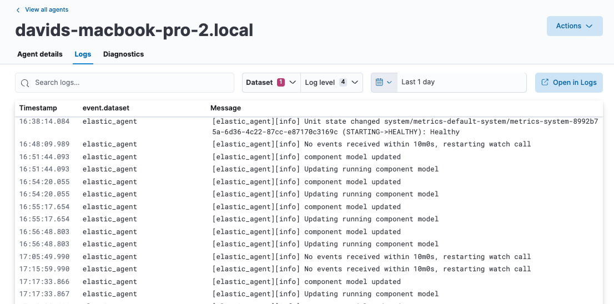
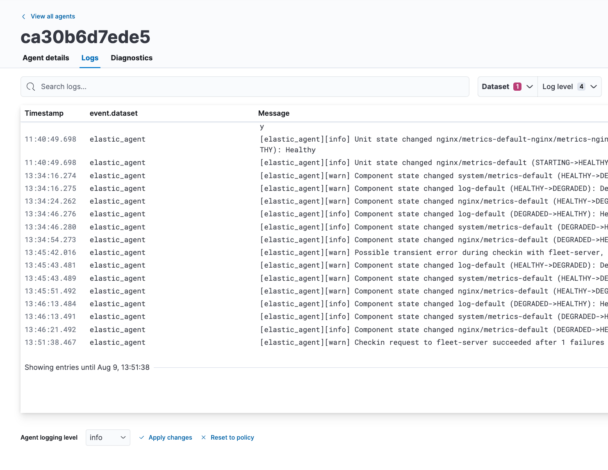
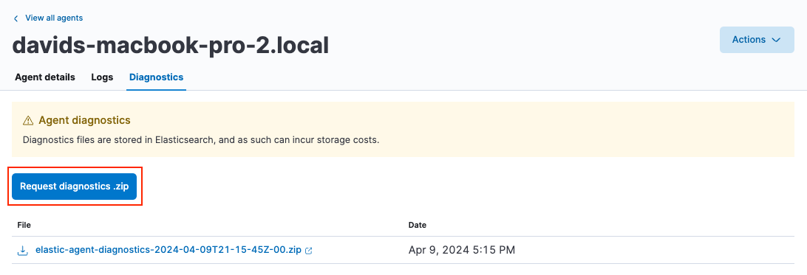

Monitor Elastic Agentsedit
Fleet provides built-in capabilities for monitoring your fleet of Elastic Agents. In Fleet, you can:
Agent monitoring is turned on by default in the agent policy unless you turn it off. Want to turn off agent monitoring to stop collecting logs and metrics? See Change Elastic Agent monitoring settings.
View agent statusedit
To view the status of your Fleet-managed agents, in Kibana, go to Management → Fleet → Agents.

Elastic Agents can have the following statuses:
Healthy |
Elastic Agents are enrolled and checked in. There are no agent policy updates or automatic agent binary updates in progress, but the agent binary may still be out of date. Elastic Agents continuously check in to the Fleet Server for required updates. |
Unhealthy |
Elastic Agents have not checked in to Fleet Server. At this point, you may need to address the situation. |
Updating |
Elastic Agents are updating the agent policy, updating the binary, or enrolling or unenrolling from Fleet. |
Offline |
Elastic Agents have stayed in an unhealthy status for a period of time. Offline agent’s API keys remain valid. You can still see these Elastic Agents in the Fleet UI and investigate them for further diagnosis if required. |
Inactive |
Elastic Agents have been offline for longer than the time set in your inactivity timeout. These Elastic Agents are valid, but have been removed from the main Fleet UI. |
Unenrolled |
Elastic Agents have been manually unenrolled and their API keys have been removed from the system. You can unenroll an offline Elastic Agent using Elastic Agent actions if you determine it’s offline and no longer valid. These agents need to re-enroll in Fleet to be operational again. |
The following diagram shows the flow of Elastic Agent statuses:
To filter the list of agents by status, click the Status dropdown and select one or more statuses.
For advanced filtering, use the search bar to create structured queries
using Kibana Query Language. For example, enter
local_metadata.os.family : "darwin" to see only agents running on macOS.
View agent logsedit
When Fleet reports an agent status like Offline or Unhealthy, you might
want to view the agent logs to diagnose potential causes. If agent monitoring
is configured to collect logs (the default), you can view agent logs in Fleet.
- In Kibana, go to Management → Fleet → Agents.
- In the Host column, click the agent’s name.
- On the Agent details tab, verify that Monitor logs is enabled. If it’s not, refer to Change Elastic Agent monitoring settings.
-
Click the Logs tab.

On the Logs tab you can filter, search, and explore the agent logs:
- Use the search bar to create structured queries using Kibana Query Language.
-
Choose one or more datasets to show logs for specific programs, such as Filebeat or Fleet Server.

- Change the log level to filter the view by log levels. Want to see debugging logs? Refer to Change the logging level.
- Change the time range to view historical logs.
- Click Open in Logs to tail agent log files in real time. For more information about logging, refer to Tail log files.
Change the logging leveledit
The logging level for monitored agents is set to info by default. You can
change the agent logging level, for example, to turn on debug logging remotely:
-
After navigating to the Logs tab as described in View agent logs, scroll down to find the Agent logging level setting.
 -
Select an Agent logging level:
errorLogs errors and critical errors.
warningLogs warnings, errors, and critical errors.
infoLogs informational messages, including the number of events that are published. Also logs any warnings, errors, or critical errors.
debugLogs debug messages, including a detailed printout of all events flushed. Also logs informational messages, warnings, errors, and critical errors.
- Click Apply changes to apply the updated logging level to the agent.
Collect Elastic Agent diagnosticsedit
Fleet provides the ability to remotely generate and gather an Elastic Agent’s diagnostics bundle.
An agent can gather and upload diagnostics if it is online in a Healthy or Unhealthy state.
To download the diagnostics bundle for local viewing:
- In Kibana, go to Management → Fleet → Agents.
- In the Host column, click the agent’s name.
- Click the Diagnostics tab.
-
Click the Request diagnostics .zip button.

Any in-progress or previously collected bundles for the Elastic Agent will be listed on this page.
Note that the bundles are stored in Elasticsearch and will be removed after 30 days.
View Elastic Agent metricsedit
When agent monitoring is configured to collect metrics (the default), you can use the [Elastic Agent] Agent metrics dashboard in Kibana to view details about Elastic Agent resource usage, event throughput, and errors. This information can help you identify problems and make decisions about scaling your deployment.
To view agent metrics:
- In Kibana, go to Management → Fleet → Agents.
- In the Host column, click the agent’s name.
- On the Agent details tab, verify that Monitor metrics is enabled. If it’s not, refer to Change Elastic Agent monitoring settings.
-
Click View agent dashboard to navigate to the [Elastic Agent] Agent metrics dashboard.

The dashboard uses standard Kibana visualizations that you can extend to meet your needs.
Change Elastic Agent monitoring settingsedit
Agent monitoring is turned on by default in the agent policy. To change agent monitoring settings for all agents enrolled in a specific agent policy:
- In Kibana, go to Management → Fleet → Agent policies.
- Click the agent policy to edit it, then click Settings.
- Under Agent monitoring, deselect (or select) one or both of these settings: Collect agent logs and Collect agent metrics.
- Save your changes.
To turn off agent monitoring when creating a new agent policy:
- In the Create agent policy flyout, expand Advanced options.
- Under Agent monitoring, deselect Collect agent logs and Collect agent metrics.
- When you’re done configuring the agent policy, click Create agent policy.